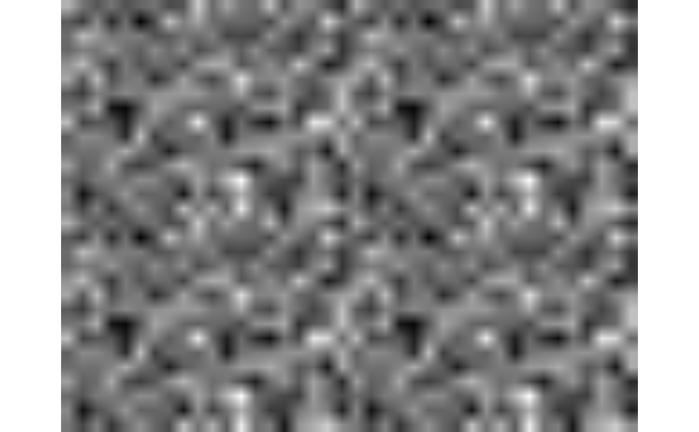

Allows reordering elements and repeating them in arbitrary combinations.
Source:R/repeat.R
einops.repeat.RdThis operation includes functionality of repeat, tile, and broadcast functions.
Usage
einops.repeat(x, expr, ..., .row_major = getOption("einops_row_major", FALSE))
repeat xArguments
- x
tensor: array, matrix, or list of arrays of the same shape and type
- expr
string: reduction pattern
- ...
either corresponding axes lengths or a single list of them.
- .row_major
![[Experimental]](figures/lifecycle-experimental.svg) logical: whether to
use row-major order for the output
tensor. If
logical: whether to
use row-major order for the output
tensor. If TRUE, the operation is performed in row-major order, but the output will be in whatever order the parent framework uses (e.g. column-major forbase::array()).
Details
When composing axes, C-order enumeration is used (consecutive elements have different last axis). Find more examples in the vignettes.
Why can't the function be called as repeat()?
repeat is a reserved keyword in R that acts the same as
while(TRUE), and has no way of being overridden. Hence,
this function can only be called as einops.repeat() or
using backticks as `repeat`().
Examples
if (requireNamespace("abind", quietly = TRUE)) {
set.seed(42)
# a grayscale image (of shape height x width)
image <- array(rnorm(30 * 40), dim = c(30, 40))
# change it to RGB format by repeating in each channel
output <- einops.repeat(image, 'h w -> h w c', c = 3)
# Visualize the output
as_image_tensor(output)
# repeat image 2 times along height (vertical axis)
output <- einops.repeat(image, 'h w -> (r h) w', r = 2)
# repeat image 2 times along height and 3 times along width
output <- einops.repeat(image, 'h w -> (h2 h) (w3 w)', h2 = 2, w3 = 3)
# convert each pixel to a small square 2x2, i.e. upsample an image by 2x
output <- einops.repeat(image, 'h w -> (h h2) (w w2)', h2 = 2, w2 = 2)
# 'pixelate' an image first by downsampling by 2x, then upsampling
downsampled <- reduce(image, '(h h2) (w w2) -> h w', 'mean', h2 = 2, w2 = 2)
output <- einops.repeat(downsampled, 'h w -> (h h2) (w w2)', h2 = 2, w2 = 2)
as_image_tensor(einops.repeat(output, 'h w -> h w 3'))
}
